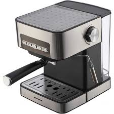

Espressor Semi-Automat
Espresoarele semi-automate sunt un echilibru între control și comoditate. Permit ajustări, dar automatizează anumite părți ale procesului.
Avantaje:
- Ușor de utilizat comparativ cu cele manuale.
- Ajustări posibile pentru pasionați.
- Costuri rezonabile.
Dezavantaje:
- Necesită mai multă implicare decât cele automate.
- Curba de învățare este moderată.
- Necesită curățare frecventă.